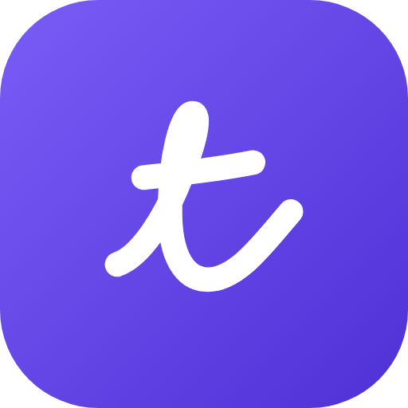

Tratto on F-Droid
Handwritten notes for Android tablets with a stylus · source code
How to add it
- Install F-Droid (or a client such as Droid-ify or Neo Store).
- On your tablet, tap the button above, scan the QR code, or open F-Droid › Settings › Repositories › + and paste the address.
- Search for Tratto and install it: updates arrive on their own.
Address
https://frumorn12.github.io/tratto-fdroid/repo
Key fingerprint (SHA-256)
5A237B0F6FDB31B94D8A0D3414ACE1C047FB1FE931B4C2F6E595E03E1F99ECE0
Which build
This repository has the full build: handwriting transcription, handwritten math and Google Drive backup, which rely on Google libraries (ML Kit and Play services). The free build, with free software only, is headed for the official F-Droid store. The two builds are signed differently: to switch, back up from Tratto (Settings › Backup), uninstall, reinstall and restore.
Tratto's interface is in Italian for now. Tratto is Italian for a pen stroke.